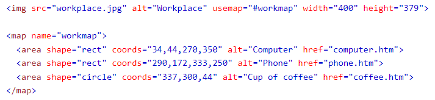

La etiqueta
Las imágenes son muy importantes, ya que pueden mejorar el diseño y la apariencia de una página web.
Para poder agregar imagenes a una página, se tiene que hacer uso de la etiqueta <img>.
Técnicamente, las imágenes no se insertan en una página web; las imágenes están vinculadas a páginas web.
La etiqueta crea un espacio de espera para la imagen a la que se hace referencia. Para usarse, se utiliza la siguiente sintaxis:
<img src="url" alt="textoalterno">
El primer atributo es conocido como src, este atributo es importante debido a que especifica la ruta donde se ubica la imagen. Un ejemplo de como se utiliza este atributo es el siguiente:
<img src="pizza.jpg" alt="Pizza">
En este caso, como la imagen se ubica en el mismo directorio que la página, solo se escribe el nombre de la imagen dentro del directorio.
El segundo atributo, alt, proporciona un texto alternativo para una imagen, en caso de que el usuario por algún motivo no puede verla. El valor de este atributo debe describir la imagen.
Un ejemplo de como se utiliza este atributo es el siguiente:
<img src="pizza.jpg" alt="Pizza">
La imagen que se utilizo es la siguiente:
Para mostrar bien el atributo, escribí incorrectamente la ruta de la imagen, por lo que se muestra lo siguiente:

Para poder modificar el tamaño de una imagen existen dos alternativas:
Este atributo no solo es utilizado para modificar el tamaño de imagenes, sino que se utiliza en muchas otras cosas.
Sin embargo, en el contexto de modificar el tamaño de imagenes, se utiliza de la siguiente forma:
<img src="pizza.jpg" alt="Pizza" style="width:200px;height:200px;">
Estos atributos cumplen la misma función, modificar el tamaño de una imagen, por lo que es una alternativa a style:
<img src="pizza.jpg" alt="Pizza" width="200" height="200">
Utilizando la misma imagen de pizza como ejemplo, si aplicamos cualquiera de los dos métodos para modificar su tamaño, se mostraría de la siguiente forma:
Si la imagen que se desea mostrar esta ubicada en una subcarpeta, es necesario incluir el nombre de la carpeta en el atributo src. Ejemplo:
<img src="imagenes/gato.jpg" alt="Gato" style="width:200px;height:200px;">
Si la imagen que se desea mostrar esta ubicada en otro servidor o sitio web, es necesario especificar la URL completa en el atributo src. Ejemplo:
<img src="https://cdn.pixabay.com/photo/2020/06/01/22/23/eyes-5248678_960_720.jpg" alt="Ojo" style="width:200px;height:200px;">

HTML nos permite utilizar GIFs animados. Ejemplo:
<img src="GIF.gif" alt="Animación">

Para poder utilizar imagenes como enlaces para acceder a otros sitios web, necesitamos colocar la etiqueta <img> dentro de la etiqueta <a>. Ejemplo:
<a href="https://tijuana.tecnm.mx/">
<img src="tecnm.png" alt="LogoTec">
</a>

Haga clic en en logo para ir a la página del TEC.
Las imagenes pueden ser utilizadas como fondo de un elemento o un fondo de una página.
Fondo en un elemento
Para utilizar imagenes como fondo de un elemento, por ejemplo un párrafo, se tiene que utilizar el atributo style de la siguiente manera:
<p style="background-image: url('fondo1.png')">
Este parrafo
tiene un fondo
gracias al atributo
style.
Si lo que se desea es utilizar una imagen como fondo para una página entera, se tiene que utilizar nuevamente el atributo style para poder realizar esto.
Esto se hace especificando la imagen que deseamos utilizar de fondo en el elemento <body>:
<style>
body {
background-image: url('fondo1.png')"
}
</style>
Para poder observar como se miraria un fondo en esta página, haga clic en la siguiente imagen:

La etiqueta conocida como <map> permite definir un mapa de imagen. Un mapa de imagen es una imagen con áreas en las que se puede hacer clic. Las áreas se definen con una o más etiquetas <area>.
Un ejemplo de como se utilizan las etiquetas, es con la siguiente imagen:

Un ejemplo de una imagen con mapeo es la siguiente, si hace clic en las partes marcadas con azul, lleva a otro sitio: